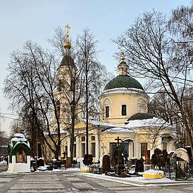

Биография
Родился 2 января 1940 года в неблагополучной семье. Мать отличалась нервозностью, отец злоупотреблял спиртным. Здоровье Иванькова в детстве было слабым. Обучаясь в школе, Иваньков решил укрепить здоровье и усиленно занялся спортом, а именно боксом и единоборствами. С 14 лет Вячеслав начал воровать.
После восьмого класса Иваньков поступил в цирковое училище. Своей специализацией он выбрал воздушную гимнастику, быстро добился результатов, но во время тренировки упал с трапеции, получив закрытую травму черепа. За медицинской помощью не обращался, хотя несколько раз возникали обморочные состояния. Тренировки Иваньков прекратил, а потом и вовсе ушёл из училища. Устроился в комбинат бытового обслуживания слесарем, а затем стал бригадиром приёмщиков, учился в вечерней школе. В двадцать лет женился на Лидии Айвазовой, ассирийке, вскоре у них родился сын. В кругу друзей Иванькова в шутку стали именовать «Ассирийским зятем».
Преступная деятельность
В 1965 году Иваньков был доставлен в отделение милиции за попытку карманной кражи. Так как при задержании он оказывал сопротивление, то 5 апреля был направлен для прохождения судебно-психиатрической экспертизы в больницу имени Кащенко, где ему поставили диагноз шизофрения. В больнице Иваньков после диагноза стал общаться с окружающими, читать книги и интересоваться решением суда[2].
18 июля 1966 года комиссия повторила заключение экспертизы о направлении Иванькова на принудительное лечение, и он совершил побег. Позже Вячеслав Кириллович сдал экстерном экзамен за 9-й и 10-й класс средней школы, скрываясь от работников милиции. В ноябре 1966 года его вновь задержали и возвратили в лечебное заведение.
В марте 1967 года экспертная комиссия с участием профессора Лунца пришла к заключению, что «Иваньков В. перенёс шизофреноподобный психоз травматического генеза, течение которого было обусловлено психогеннотравмирующими воздействиями. Из психопатического состояния он полностью вышел».
Геннадий Карьков — он же вор в законе «Монгол» — заметил способности Вячеслава Иванькова.[3] В январе 1972 года в Москве была разоблачена организованная преступная группа, возглавляемая Карьковым. Наиболее активными участниками преступной группировки Монгола были Иваньков Вячеслав Кириллович под уголовной кличкой «Япончик», и Быков Владимир Васильевич, 1937 года рождения («Балда»). Последний был приговорён к 13 годам лишения свободы. «Япончику» удалось уйти от наказания.[2]
Вскоре Иваньков создал собственную банду. Её члены под видом сотрудников милиции совершали обыски у тех, кто, как тогда говорили, живёт на нетрудовые доходы, заканчивавшиеся полной «экспроприацией». Других жертв, как и при Монголе, вывозили в лес, где подвергали жесточайшим пыткам, вымогая ценности и деньги. Вскоре досрочно освободился Балда, к группе Иванькова присоединились уголовники Слива (Слива Вячеслав Маракулович) и Асаф (Сосунов Асаф Евдаевич), и ОПГ начала действовать по всему СССР. Иванькова замечали в Москве, Тбилиси, Киеве, Ташкенте, Риге, Казани, в Свердловске (где дочь известного цеховика Тарланова отдала Иванькову всю имевшуюся в доме «ювелирку»). В каждом регионе банда убивала людей. Например, в Казани был убит налётчик по кличке Чарлик, а в Риге — спекулянт по кличке Яша, в других местах занимались вымогательством и разбойными грабежами.
Иваньков работал фотолаборантом, тренером в детской спортивной школе.
В 1974 году получил 2-ю группу инвалидности по психическому заболеванию бессрочно. Иваньков часто посещал рестораны и имел широкий круг знакомых. В марте во время драки с кавказцами, в ходе которой был убит один кавказец, в ресторане «Русь» в городе Москва Иваньков был задержан. При обыске у него были изъяты поддельные паспорт и водительское удостоверение. В период следствия с 5 июня по 13 августа 1974 года Иваньков находился на стационарной судебно-психиатрической экспертизе в Институте имени профессора Сербского, где эксперты пришли к выводу, что он «психическим заболеванием не страдает, вменяем в отношении инкриминируемых ему деяний, высказывания о „преследовании“ носят симулятивный характер». 18 ноября 1974 года Иваньков был осуждён по ст. 196 ч. 3 УК РСФСР за использование поддельных документов к 7 месяцам 15 дням лишения свободы. Используя свои связи, Иваньков сумел уйти от полной уголовной ответственности. В период суда Иваньков содержался под стражей в Бутырской тюрьме, где коронован «вором в законе». Его кличками стали «Ассирийский Зять» и «Япончик»[2].
После тюрьмы Иваньков развёлся с женой. Числился некоторое время товароведом в овощном магазине, но на самом деле нигде не работал. Зато часто бывал в «командировках». В милицейских отчётах о нём говорилось: «Без определённых занятий и без прописки…». Он вошёл в круг наиболее влиятельных лидеров уголовного мира Москвы. Два раза в неделю посещал закрытый ресторан для состоятельных людей Михаила Звездинского «Сатурн» в компании Монгола. В компаниях отличался властностью, переходящей в жестокость. Его часто приглашали в качестве теневого арбитра в спорах «о долгах».
В начале 1980 года Иваньков организовал ОПГ из Быкова, Сливы Вячеслава Маракуловича (1944), Сосунова Асафа Евдаевича (1938), братьев Квантришвили Амирана (профессиональный игрок в карты) и Отари (бывший спортсмен). Участники банды при помощи удостоверений и формы сотрудников милиции производили обыски у дельцов теневой экономики, отбирая у них ценности и деньги, а также совершали квартирные кражи. При помощи широкого круга осведомителей среди зажиточной интеллигенции и госчиновников бандиты выявляли лиц, располагающих крупными суммами денег. Затем обманным путём увозили их на автомобилях за пределы Москвы или доставляли в явочные квартиры, где, применяя пытки, добивались от жертв выдачи ценностей[2].
1900-е годы
В 1991 году об освобождении Япончика ходатайствовали многие представители культуры и спорта, в частности Иосиф Кобзон, Александр Розенбаум и офтальмолог Святослав Фёдоров. Ошибочно к числу просителей причисляется правозащитник Сергей Ковалёв, который в 2009 году заявил, что лишь ходатайствовал о том, чтобы Япончика не переводили в «зону», с руководством которой у того был конфликт.
В марте 1992 года Иваньков выехал сперва в Германию, а затем в США под видом сотрудника киностудии Ролана Быкова «12А» и при помощи российско-американского совместного предприятия «Приоритет»; помимо этого, Иваньков также использовал фиктивный брак с гражданкой США Ириной Ола. Иваньков обосновался в Нью-Йорке, где стал посредником в спорах между как преступными авторитетами, так и российскими предпринимателями и, кроме того, по некоторым данным, занимался наркоторговлей. Иваньков организовал бригаду для вымогательства и уничтожения врагов из 250 бывших спортсменов и военных во главе с бывшим офицером КГБ. Отдельные источники сообщали также, что Иваньков тайно посещал и Москву, где пытался спровоцировать войну против чеченских группировок. Позднее в западной прессе встречались утверждения, что фактически в это время Иваньков был главой «русской мафии» в Нью-Йорке.
Осенью 1994 года в ФБР обратились два бизнесмена российского происхождения Волков и Волошин, совладельцы компании «Саммит Интернэшнл». По их словам, Япончик с товарищами угрозами вымогал у них 2,7 млн $. Полгода велось наблюдение, все телефонные разговоры Иванькова тщательно записывались, а за его передвижением круглосуточно наблюдали восемнадцать агентов ФБР, работавших в три смены. Накопив достаточно улик, Япончика и пятерых его сообщников 8 июня 1995 года арестовало ФБР по обвинению в вымогательстве. В январе 1997 года Иваньков был признан виновным и осуждён на девять лет и семь месяцев тюрьмы за вымогательство и фиктивный брак с гражданкой США Ириной Ола. Отбывал наказание в тюрьме «Алленвуд» (Allenwood). В 1999 году в камере у Иванькова был обнаружен героин, за что он был переведён в крыло для особо опасных преступников[9].
В апреле 2000 года Вячеслав Иваньков получил в России заочное обвинение в убийстве двух турецких предпринимателей и ранении ещё одного турецкого предпринимателя в московском ресторане «Фидан» в феврале 1992 года; в США был направлен запрос на экстрадицию. В июле 2004 года Иваньков был отпущен из американской тюрьмы «Алленвуд», но его тут же депортировали в Россию. Его доставили в СИЗО «Матросская тишина» под охраной ОСН «Сатурн» УФСИН г. Москвы: по словам командира отряда, сотрудникам сообщили о возможности покушения на Иванькова. Во время перевозки в СИЗО с сотрудниками конвоя Япончик вёл себя вежливо, но при этом бросался на журналистов и пытался разбить камеры, поскольку ему не нравилось, что его снимают и ему же задают вопросы[10][11].
Российская прокуратура отказалась прекратить дело за сроком давности, мотивируя это тем, что Иваньков скрывался в США от российского правосудия; сам обвиняемый в свою очередь заявил, что намерен добиваться полной реабилитации. Однако дело начало разваливаться, что привело к отставке начальника управления по расследованию бандитизма и убийств прокуратуры Москвы Григория Шинакова. 18 июля 2005 года коллегия присяжных признала Иванькова невиновным. Исполняющий обязанности прокурора Москвы Владимир Бакун заявил, что 7 из 12 присяжных были якобы ранее судимыми, в декабре того же года оправдательный вердикт был утверждён Верховным судом РФ, а в апреле 2006 года законность вердикта была подтверждена президиумом Верховного суда РФ. В числе адвокатов, представлявших интересы Иванькова на всех этих слушаниях, был, в частности, Александр Гофштейн, который в ноябре 2006 года был арестован в Мадриде по делу о «русской мафии»[9].
После оправдания Иваньков заявил, что будет «удить рыбу» и не собирается заниматься никакими преступными разборками. Тем не менее, проживая за границей во второй половине 2000-х годов, Иваньков всё же выступал в качестве «третейского судьи» в спорах между разными группировками. В частности, Иваньков принимал участие в конфликте между преступными кланами Тариэла Ониани (арестованного в июне 2009 года) с одной стороны и Аслана Усояна (Дед Хасан) и Лаши Шушанашвили (Лаша Руставский) (в сентябре 2008 года депортированного на Украину, но затем всё же вернувшегося в Россию), с другой, заняв сторону последних[9].
Число зарегистрированных преступлений в России по статье УК «бандитизм»

Покушение и смерть
28 июля 2009 года около 20:00 в Москве на Иванькова было совершено покушение[12]: его обстреляли на выходе из ресторана «Тайский слон» на Хорошёвском шоссе, 25[13]. Нападавший стрелял из снайперской винтовки СВД с оптическим прицелом[14]. Огонь вёлся из припаркованной ГАЗели на противоположной стороне дороги. В тенте было сделано отверстие, из которого снайпер вёл прицельный огонь. После ранения охрана Иванькова затащила его обратно в ресторан. Иваньков был срочно госпитализирован. Врачи оценили его состояние как крайне тяжёлое и провели экстренную операцию, после которой его ввели в искусственную кому.
В ночь с 13 на 14 сентября Япончик пережил клиническую смерть[15]. Скончался от перитонита 9 октября в частной клинике при онкологическом центре на Каширском шоссе в Москве. Врачи санировали брюшную полость, но спасти его не смогли[16].
Следствие вскоре установило, что организатором убийства был вор в законе Илья «Махо» Симония, с которым у Япончика была долгая вражда. Сообщниками Симонии были пятеро человек — Каха Газзаев, Муртаз Шадания, Джамбулат Джанашия, Астамур Бутба и Нузгар Папава, причём стрелял в Иванькова именно Бутба. В 2021 году Газзаев, Шадания и Джанашия предстали перед Московским городским судом, а Бутба и Папава скрылись на территории Республики Абхазия, которая, согласно её законодательству, не имеет права выдавать своих граждан[17].
Похороны
Утром 13 октября в Храме Воскресения Словущего на Ваганьковском кладбище, где прошло погребение, состоялась церемония прощания с усопшим[18]. Сотрудники Инженерно-сапёрного отдела ГУВД по Москве обыскали всю территорию кладбища на предмет обнаружения взрывчатых веществ.
Смерть Иванькова вызвала большой резонанс: возле храма находилась большая толпа людей, а также журналисты крупных СМИ, фотокорреспонденты и телегруппы. По желанию родственников работа СМИ на похоронах была ограничена, сотрудники ЧОП препятствовали работе прессы, тем не менее агентство РИА Новости[19], Ассошиэйтед Пресс и Франс-Пресс выпустили на свои ленты фотографии траурной процессии. К самой церкви были прислонены многочисленные венки, на которых написано «От братвы из Кирова», «От братвы из Ярославля» и другие[20]. Распорядителем погребения выступил вор в законе Аслан Усоян[21]. Покойного хоронили в роскошном дубовом гробу, в котором установили свет и кондиционер.
На церемонии погребения присутствовало около 500 человек, в основном преступные авторитеты и участники преступных группировок[22]. Его преемником должен был быть Тимур Казаков по кличке Сашка (Сардор Казаков), но он отказался и по сегодняшний день занимается предпринимательством в Ташкенте. Широкое освещение похорон в СМИ вызвало осуждение в Государственной Думе[23]. В Госдуме назвали «истерией» внимание СМИ к Япончику и тот факт, что на его похоронах несли российский флаг.
Похоронен на 50-м участке Ваганьковского кладбища (рядом с актёром Леонидом Харитоновым). Летом 2011 года на могиле был установлен памятник. Автор памятника — Александр Рукавишников[24]
Ваганьковское кладбище
Преемники
Российские СМИ со ссылкой на свои источники в МВД, предположили,[когда?] что преемником Вячеслава Иванькова стал лидер мазуткинской ОПГ Алексей Петров (наст. фам. Суворов), известный также под кличкой Лёня Петрик
Литература
- Крутер М. Я защищаю Япончика: Роман-исповедь. — М.: Издатцентр, 1998. — 411 с. — 25 000 экз. — ISBN 5-7816-0013-2.
- Разинкин В., Тарабрин А. Цветная масть: элита преступного мира. — М.: Вече, 1998. — С. 55—86. — 480 с. — (Русская бойня). — 10 000 экз. — ISBN 5-7838-0177-1.
- Рудаков А. Слава Япончик. — М.: Эксмо, 2003. — 416 с. — (Легенды преступного мира). — 5000 экз. — ISBN 5-699-02626-6.